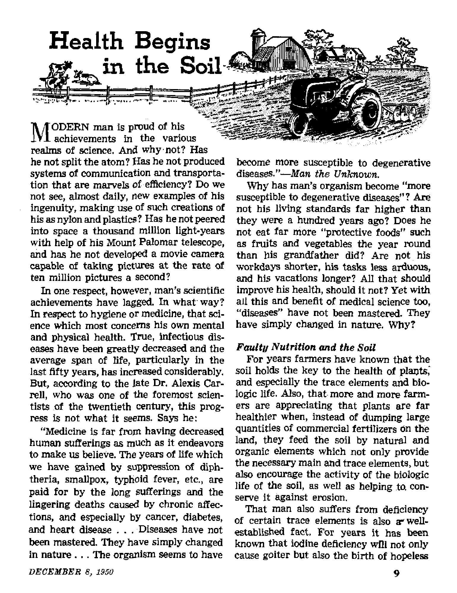

THE MISSION OF THIS JOURNAL
Newi sources that are able to keep you awake to the vital Issues of our times must be unfettered by censorship and selfish interests. •‘Awake I*’ has no fetters. It recognize# facts, faces facts. Is free to publish facts. It is not bound by political axrtbitions or obligations; it is unhampered by advertisers whose toes must not ba broaden on; it is unprejudiced by traditional creeds. This journal keeps Itself free that it may speak freely to you. But it does not abuse its freedom* It n?-intains integrity io truth.
“ Awake I” uses the regular news channels, but is not dependent on them Its own correspondents are on all continents, in scores of nations. From the four corners of the earth their uncensored, on*the-scenes reports come to you through these columns. This Journal's viewpoint is not narrow, but is international. It Is read in many nations, in many languages, by persons of all ages. Through Its pages many fields of knowledge pass in review—government, commerce, religion, history, geography, science, social conditions, natural wonders—why, its coverage is as broad as the earth and as high as the heavens.
“Awake I” pledges itself to righteous principles, to exposing hidden foes and subtle dangers, to championing freedom for all, to comforting mourners and strengthening those disheartened by the failures of a delinquent world, reflecting sure hope for the establishment of a righteous New World.
Get acquainted with “Awake 1” Keep awake by reading *‘Awake 1”
Published BemlmOntelt By WATCHTOWER BIBLE AND TRACT SOCIETY, INC.
117 Adams Street Brooklyn 1, N. Y„ tL S. A.
N. H, KwORR, PreHdent Grant Suiter, Scoretary
Printing this issue: 810,000 Five cent! a copy
Lamfwi Is which (hit imaiJM Li tull I Aad: Semjurouttkl?—Bngllsh, German, Spanish. Monthly—Afrikaans, Danish, French, Greek, Pawsuese, Swedish, Ukrainian.
Office Tearly Subscriptlim Hau
AmWlta, US., LIT Adant SL, Brooklyn 1, N.I. *1 A «i troll*, 11 Beresford R<t, Blnthflald, NO. Bs Gsuli. 40 Erwin Aw., Toronto tf, taurtd fl Enilsnd, 84 Craven Tenia. Loudon, W. i Ba Soitit Africa, 828 Boston House, Cape Town 6s
ftemiffiUHi should Em ivic to office in your country lu compliance with reaulntLocs to guarantee safe delivery of money. tamlttencea are icceptid at Brooklyn from countries where no office U located, by luirmational money order only. Subscription rates In different coimtrlp, art hero stated in local currency, kotlte of re plrat Jon (with reniwtl blank) b itni at least two uem before inbatrlpUtD ex* pins. Gt ana* of iftrtii wt«i sent to w office may bo npocted effect!*? within one son in, Send your old as well as new address.
Enterod as seand-dm matter at Brwklyi), N.
Act of March 3, 18T9, printed in U. fl. A.
CONTENTS
Ilie United States Loan to Franco Franco Restores Church-State Hitler, Mussolini and Franco, Inc.
Bilbao Hails Franco—or Else!
‘•Health Begins in the Soil” Commercial Fertilizers Blamed Return to Natural Fertilizers
Which Way, South Africa?
Barnyard Social Register
The Gulf Stream
3
5
6
8
9
10
11
13
16
17
"Your Word Is Truth”
Why Jehovah's Witnesses Preach the Way They Do
Chemocracy, Latest of the Isms
Volume XXXI Brooklyn, N. ¥., December 8, 1950 Number 23
Why would a democracy back a fascist tyrant?
MANY will recall Aesop’s tale of the eagle fluttering helplessly earthward pierced through with an arrow. Noting with dismay that the arrow’s haft had been feathered with one of its own plumes, the eagle moaned with its dying breath, “We often give our enemies the means for our own destruction."
The famed fable seemed due for a resurrection in American minds during the last week of August, 1950, with the great “American eagle” playing the leading role. Congress had just approved a $62,500,000 loan to the government of Spain’s tyrannical Fascist dictator, Francisco Franco; and few have forgotten the havoc the forces of fascism blitzkrieged over the earth not ten years ago. Aside from the moral aspect, close U. S.-Franco fraternization is feared as weakening to American prestige.
Following Senate approval of the loan, one commentator had called it a 'Christmas present to communist propagandists’, and President Truman and his State Department have agreed publicly with this. Some have wryly suggested that Franco has more friends here than in Spain. Eyewitnesses claim the dictator is hated bitterly at home and tolerated only as an alternative to another civil war.
Coming at so critical a time and representing such a jolt to U. S. policy, many have wondered at the action of Congress. Probing some of the mysteries of the matter, The Christian Century of September 13, 1950, had this to say: “Thus we have financed a fascist dictator, whose ports supplied Hitler’s submarines during the war, and who, as Norman Thomas reminds us, said in 1941, ‘What a joy to see the German bombers one day punishing the insolence of the skyscrapers of New York!’ Why was Congress pushed into this vote of approval of Franco? One of the most interesting newspaper pieces we have read in a long time was the one in which Mrs. Roosevelt tried to answer that question. 'The course Congress has followed/ she wrote, ’makes me wonder what the hidden reason is for its action.’ ”
After restating her inquiries as to whether the reason might have been pressure from high government officials, home state voters or the interests of labor and agriculture, The Christian Century asks if there might be still another source of pressure not considered by Mrs. Roosevelt. Awake! answers that much evidence is available to provide another able candidate as the pressure source. The inquirer’s search is spurred by The Nation’s scathing denunciation of the loan, in its issue of September 9, 1950. In part it said: “The money will go to him without strings—or hope
of repayment; so there is no reason to believe that it will not be used to resuscitate the huge system of graft which greases the wheels of the fascist machine and the palms of Franco’s followers . . . But congressmen need to prove their anti-Red zeal before election day, especially in districts where Roman Catholic influence is strong; so they spend the taxpayers’ money to support Spain’s ‘Christian gentleman’, who has several times been turned down by the Export-Import Bank.”
The same magazine’s August 12 issue declared, “Credit for Franco’s victory goes to his paid lobbyists here;... to the Joint Chiefs of Staff ... to the cotton senators . . . and to the Catholic Church, some sections of which have exerted tremendous pressure . . . The pressures—military, political and clerical—were too severe.” Some not versed in the politics of the Catholic Hierarchy may ask, Why? A brief lesson In modern history will help to answer this.
Church vs. the Republic
For centuries under the Spanish monarchy the Catholic Church in Spain enjoyed the luxury of supremacy peculiar to its one-time glory throughout Europe during the feudal Middle Ages. Spain alone of all Europe had almost completely resisted the progress and enlightenment of the Reformation and the times since. But Anally the day of reckoning arrived, bringing with it a sudden revolution, the downward crash of the decadent monarchy and the birth of the new Spanish Republic. Eyewitness accounts tell of the joy among the masses and relate that this preponderantly Catholic nation, almost with ecstasy, burned Catholic churches and monasteries as symbols of past slavery and sources of incitement against the new government.
The restoration of order under the Republic ushered in the best rule the Spanish people had ever known. This despite the fact that the government had to hurdle the agination of radical communist elements on the one hand and the hordes of the church and the monarchists on the other. AU laws linking the church and the state were blotted out as Catholic autocracy gave way to laws of religious freedom. Religious officials were restricted to purely theological activities. Under the religious congregations law of 1933, religious orders enrolling 38,000 nuns and monks became civil societies subject to taxation, and art treasures worth millions reverted to the state. The centuries-long accumulation of wealth by the church while the peasant labored for virtual starvation wages at last reaped a recompense.
The Republic’s birth in 1931 had drawn the fire of Spanish bishops of the Catholic Church who had condemned its new constitution specifically and democracy in general. Now from Rome directly more venom spewed forth. The pope’s rage knew no bounds, and he roared back his reply with a decree of excommunication against the entire Spanish government. The fate of an excommunicate from the Catholic Church is indeed dire, as it lays him at the mercy of “church swords” and frees Catholics from any vows of fealty to the one so branded. The pope’s excommunication decree against the Spanish Republic was equivalent to a declaration of war.
The literal declaration came later when, in 1936, behind “church sword” Franco, the revolution broke. From the beginning no attempt was made to hide the Hierarchy’s love for Franco and his affection for the church. In 1945 the Vatican radio quoted a broadcast by Archbishop Gonzales, coadjutor of Bogota, saying, “It is thanks to God’s Providence that Spain has regained her youthful strength ... It is a blessing to see how true and healthy is Spain’s revival in the social, economic, in-tellectual, and above all spiritual spheres
—like the Rock of the Catholic Church, on which it is based . . ■ The nation is a defender of truth, and deserves the support of God/*
The archbishop is free and easy in the way he throws God’s support around to the four winds. Let correspondent Leland Stowe jar his memory about this “defender of truth’1, the Franco government over which he fawns. In his article, “Franco Lies to Win’1 (New Republic^ May 19, 1937), Stowe cited Franco’s cover-up of his slaughter of 3,000 or more peasants in the bull ring at Badajoz, and his laying of the civilian blasting of Durango (including the machine gunning of fourteen nuns) to a 'Marxist mob’, which a London Times writer declared existed nowhere in the province.
Franco Restores Church-State
Yes, during the inexcusable Spanish Civil War, the church did not hesitate to continue backing a black-hearted murderer who, though himself a Catholic, did not hesitate to mow down like flies the gallant Catholics who $tood up for the legitimate Spanish Republican government. Why? So that today Spain could, under Franco’s resurrected church-state of the Dark Ages, enjoy its “revival in the social, economic, intellectual, and above all spiritual spheres —like the Rock of the Catholic Church, on which it is based”. Little wonder that some frank reporter in Time magazine (May 29, 1944) revealed: “It is unfortunate that the Catholic Church in Spain is back doing business in the same way. Once again the Church is exploiting the people, selling indulgences, collecting its ten per cent, doing all the things that helped bring on the civil war.”
The years since the close of World War II in 1945 almost drip with Catholic propaganda favoring Franco, calling him “one of the greatest living leaders today” and praising his Spain’s "religious zeal”. High points include the pope’s special blessing on him and his fascist government in November, 1945, and again the following year. Why not? He has restored Rome’s religious hierarchs to their coveted lucrative position on the necks of Spain’s halfstarved peasantry; he has suppressed Protestantism, abolished all liberalism and individual freedom so dear to democratic lands. In triumph, the church in Spain brought out a new official catechism categorizing all liberal institutions including Protestantism, freedom of press, conscience, worship, assembly and instruction as sinful, but not listing as such nazism or fascism*
Behind a propaganda offensive largely Catholic-inspired, Franco succeeded in hoodwinking America, Britain and France so that during the Spanish Civil War they held to a “non-aggression” pact ‘to keep the war from spreading’. Meanwhile, the nazis of Germany and the fascists of Italy poured arms, men and money into Franco’s war chest on an out-and-out Ioan basis while ■ mumbling “non-aggression” with their oily mouths. Still, not for three years were they able to wear away the Republic’s defenders. To this day the Hierarchy from Rome will parrot the line of Franco that it was a Red-run, Red-supplied Republic. But the facts of observers testify that the communists never did control the Republican government, and the world knows the Loyalist authorities had to buy with gold arms to defend their cause, from the only governments recognizing their right to do this, Russia and Mexico.
If it was merely communism the church feared in Spain, why publish condemnations of principles like free press, worship, speech, conscience, assembly and instruction—things no communist government stands for? And if these principles represent a threat of communism, does the
Catholic Church, then, consider the United States government communistic for upholding these?
Pouring on the Whitewash
The tide of gush emitting from Rome’s world-wide voices is seemingly endless. One Catholic paper points out how “lucky” the United States is to have a fascist dictator in Spain instead of a communist one. Paid advertisements have frequented the public press, placed there by Catholic papers and orders like the Knights of Columbus, highlighting evil deeds they attribute to Loyalist soldiers and completely overlooking Franco’s openly murderous campaign. For refusing ^pain entrance into the United Nations in 1946 the action of that assembly was tagged a “kangaroo court”. The Missouri State Council of the Knights of Columbus all but gags thinking persons with its galling plea: “For if Spain . . . should fall before the Red Fascists, the last outpost of Christian civilization in Europe will be gone.1’
An overwhelming tirade from influenced individuals, pleading for Franco as a bulwark against communism, has burst forth, especially from Catholic priests and teachers or other dignitaries. Capping them all for unbelievable credulity and slush is the statement of Philadelphia’s Judge Clare Gerald Fenerty on May 22, 1949, before a Catholic society gathering: “No nation in the world can so honestly claim to have saved civilization as can Spain. Franco’s victory was a world victory.”
This obvious barrage of Catholic pressure has not gone entirely unnoticed. It was noticed by Federal Council of Churches president G. Bromley Oxnam in 1946. In May that year, The Christian Century unmasked the charges of communism leveled by Franco against the former Republic, and nakedly pointed out that Catholic pressure kept American aid from goIng to the Loyalists during the civil war. In August, 1950, the same magazine declared that Democratic Party leaders concluded surrender to current Catholic pressure would be necessary to retain their Congressional majority in November.
As though Franco’s miserable record needed any recalling, we will remind that despite much talk about reforming his government the Spanish caudiUo has done nothing of the sort, and his 28,000,000 still live without fundamental freedoms, including even the right of a fair trial. A member of the former Republican government estimated, in 1944, that at least 300,000 victims had been shot under the Franco regime, that from 60,000 to 70,000 political prisoners then resided in jail and that another 380,000 were under surveillance.
Hitler, Mussolini and Franco, Inc*
True, Franco did not declare open war on the Allies during the second world war. But that is all. He did everything Spain was then capable of doing to insure a Hitler victory. Innumerable documented letters between Franco and the Axis partners reveal el caudiUrfB sentiments for them. A memorandum by Germany’s ambassador to Spain dated August 8, 1940, outlines Spain’s willingness to then declare war against the democracies if promised certain returns by Hitler. The fuehrer’s quibbling over terms, not Franco’s love for democracy, prevented further action.
A Columbia Broadcasting System correspondent declared from Paris in 1946 that Spain was then a haven for “at least 2,000 Nazi agents classified as ‘dangerous* ” Similar charges linked Spain with Argentina in sheltering nazis. One congressman declared Spain the “new center of world fascism”. In the midst of seeming Nazi triumph in 1940, Franco taunted the British ambassador by asking why Britain and France did not give up while there was stW time to spare further destruction.
Captured official German documenta carry the stream of evidence on and on. Hitler exhorts Franco to further good works for the cause. Franco can’t wait to reply and “make certain clarifications and confirmation of my loyalty*’. Franco assures Mussolini of his wish to enter the war at “a favorable opportunity”. Mussolini acknowledges the statement gratefully. The files proved overwhelming in their indictment of Franco as pn Axis partner in every sense and prompted the U, N/s 1946 condemnation. However, the following year witnessed the launching of the unparalleled Catholic propaganda campaign in America. Significantly, in 1947 the U. S. delegate abstained from a second U. N. condemnation of the Spanish government. On November 4, 1950, the U. N. General Assembly approved a resolution lifting the 1946 U. N. ban on sending ambassadors and ministers to Madrid.
To be sure, the postwar model of Spain’s “dime store Caesar”, dripping with his friends’ whitewash, has talked loud and long about how he never, never really liked associating with Hitler and Mussolini and how he now just hates that mean Russian bear and oh! just knies the American eagle and British lion. In March, 1949, the Spanish foreign minister did indeed say that the future of Spain was bound up with that of the United States. But when the Nazi star seemed risen in permanent brilliance, the two-faced Franco wrote to his then bosom companion: “Dear Fuehrer: ... I stand ready at your side . . . and decidedly at your disposal, united in common historical destiny"
4 Handout for a Hoodlum,
Spanish sources and U. S. admissions indicate that “no strings1’ could be attached to the loan. Just how those responsible could ever feel free to trust a lying murderer like Franco to spend the funds for the purposes desired by America is beyond imagination. With interest we read press dispatches of Spain's appropriating over £90,000 for the suppression of Protestants and Freemasons. We read of the Spanish government’s making loans to the Catholic Church for the building of seminaries* Are these the things the United States’ legislators had in view when they appropriated the loan for Spain? In further awakening revelationSj Drew Pearson reported in 1946, on the basis of State Department files, that Franco had extended aid to Argentina’s fascist state. The same reporter revealed in July, 1949, that some of the senators working for the loan had been under advice of Jose de Lequerica, Spain’s wartime pro-Nazi ambassador to Vichy.
What, then, of the final flimsy argument c4 Catholic propagandists that since the United States as well as the United Nations recognizes other dictatorships, including that of Russia, whom Rome calls infidels, mongols, the forces of Genghis Khan, etc., there should be no hesitancy to deal with the anticommimistic franco regime. Yet the Roman Church practices this very same principle on grounds of far less expediency. In February, 1950, the pope broadcast a strong condemnation of press censorship and totalitarian methods in general. Report of the broadcast ivas at first suppressed in Spanish papers. However, immediately thereafter explanation was offered that the speech referred only to “iron curtain countries”, not to Spain. Thereafter, the speech was printed with this explanation. The Catholic Church boasts that all of Spain's press is Catholic and subject to Catholic censorship, so there can be no question of the church’s approval of this explanation of the address.
This hypocrisy is capped by the fact that though the church so deplores the "heathen hordes of the Soviet* she hails the victory of Franco, who enlisted the help of thousands of North African Moors in his legions while conquering Spain, Rome is not scrupulous. Anyone who will serve her ends can join the ranks of her ‘pure crusaders’, Any thug can be used to destroy freedom. Then, to maintain their tyranny, the shameless hierarchs turn to the democracy they tried unsuccessfully to wreck and ask for a handout for their needy “church sword". Many fear that by the loan America is feathering arrows for her own downfall, financing a confessed murderer and backing a government described by one writer as the symbol of "rule of the world’s blackest clergy, most reactionary army and most degenerate nobility". They hope for some obstruction to the loan’s completion.
But Catholic and Protestant alike who have true hope are learning that real freedom and the promise of life itself are not to be bought. They are God’s gift to those who will turn to his now operating ‘government of peace*, the Theocracy. This kingdom will need no loan to spread its rule earth-wide, destroy oppression of every kind and establish permanent and united peace.
A TRIUMPHANT victory for Franco! An example of “spontaneous enthusiasm” on the part of the people of Bilbao in hailing the Spanish dictator! That is what the Spanish propagandists would have us believe.
G. That it was a victory could hardly be questioned, for the comment was made regarding the lack of hostilities on Franco’s visit in June to the city of Bilbao, a stronghold of opposition to his regime. There he faced not only Basque apposition to his dictatorship, but a city in which thousands of leaflets had been distrib' uted urging a boycott of all celebrations and threatening violence during his visit. When the boycott failed and the violence diu not materialize, one supporter said, “If he can carry it off this well here, he doesn’t have to worry about anywhere else.”
G. But the “spontaneous enthusiasm” reported by the Spanish press was definitely open to question. Whence would such enthusiasm come? Why should Bilbao suddenly turn out with flags, banners, holidays, festive occasions and more-or-less enthusiastic throngs to welcome Franco? Light was shed on this by the Basque delegate in the U. S. A., Jesus de Ga-lindez, in a letter to the New York Time# (June 29) which told of the Basque underground’s report on the preparations for the “spontaneous demonstration of joy” over Franco’s visit. He stated that prior to the visit the local governor had ordered aii factories in the industrial zone of Bilbao to give a full two-day holiday with pay to all workers, if they attend the “spontaneous” demonstrations. [It was reported elsewhere that the government ordered that names of workers who did not show up be supplied to authorities.]
C Fishing boats along the coast were given to understand that they would be welcome in Bilbao, or else. Police made a house-to-house check-up along the thoroughfares Franco would use to be sure that flags would fly from every window, and, as an additional precaution, tenants, were ordered to give a list of those who would watch the parade so that special extra “guests” provided by the governor could be present at empty windows. When Franco arrived the well-arranged, carefully planned, “spontaneous” celebrations began. There waa no violence in this city that was crawling with police, plain-clothes men and motorcycle escorts, and where for miles civil guards patrolled the roads. 1
Franco's visit to Bilbao was highly publicized. It was an evidence of his thorough domination of the country. The lack of hostilities was a political triumph, but the enthusiasm was not as great as official Spanish press sources implied) and the city's “spontaneous" expression of joy at seeing Franco could well be compared with the man who had a gun rammed into his back and heard the words, “Smile, brother!” He smiled. So did Bilbao.
idiots known as cretins. Concerning iodine deficiency in small children, Dr, J. For* man, editor of the Ohio State Medical Journal, stated;
“Their little bodies develop, their brains sharpen, their nervousness and irritability disappear, when they are given as much as a trace of iodine.” And regarding the need of other elements he adds: “Copper is used in parts per million to prevent anemia, both in animals and in ourselves. We do not need much iron (about enough to make six carpet tacks) but we need that very badly and we need a constant replenishment in our bodies . . . Magnesium is essential to the formation of bone and teeth and plays an important part in the metabolism of phosphorus and of sugars and starches. If it becomes sufficiently reduced in an individual, such a person becomes irritable, the heart runs away with itself and finally, if carried to the extreme, the victim dies in convulsions,”
In view of these facts the question presents itself: Can It be that faulty nutrition is one of the causes of man succumbing to degenerative diseases and that it is based on impoverished soil? Such seems to be the opinion of the Medical Press and 'Circular (a physicians’ professional magazine published in England), for it editorially states: “The first and indispensable condition of health is that it must be based on adequate nutrition/’ and that “Whatever way we look at it, health begins in the soil”.
■That opinion is also shared by others, tn a forum on “Soil, Food and Health” at the recent 10th annual meeting in New York city of the Friends of Land, a society of conservationists, it was shown that the health of man, as well as of plants and animals, was directly related to the soil. Reporting on this forum, the New York Times, September 30, 1950, in a news dispatch entitled “Hidden Minerals Held Fer-tiltty Key’ll quotes Dr. J. Forman as saying that by proper soil conservation “we can easily raise enough of the right kind of food to feed twice as many people as we have in this country today and do away with nearly all disease”.
At the same forum Dr. K. Starr Chester, supervisor of the agricultural division of the Batelle Memorial Institute, at Columbus, Ohio, stated; “The nutritive value of oqr daily foods is on the down grade, mainly because of the constant decline in the fertility of our soil. Complete fertilization of the soil could easily talte care of the increasing population in the world for many generations.”
Commercial Fertilizers Blamed
Interesting light as to the cause for the decline in the nutritive value of our crops is shed by the following quotation, taken from Carrell’s Man the Unknown:
“Man is literally made from the dust of the earth. For this reason his physiological and mental activities are profoundly influenced by the geological constitution of the country where he lives, by the nature of the animals and plants on which he generally feeds. His structure and his functions depend also on the selections he makes of certain elements among the vegetal and animal foods at his disposal , . ,
“Man is, first of all, a nutritive process. The staple foods may not contain the same nutritive substances as in former times. Mass production has modified the composition of wheat, eggs, milk, fruit, and butter, although these articles have retained their familiar appearance. Chemical fertilizers, by increasing the abundance of the crops without replacing all the exhausted elements of the soil, have indirectly contributed to change the nutritive value of cereal grains and vegetables. Hens have been compelled, by artificial diet and mode of living, to enter the ranks of mass producers. Has not the quality of their eggs been modified? The, same question may be asked about milk, because cows are now confined to the stable all the year round, and are fed on manufactured provender. Hygienists have not paid sufficient attention to the genesis of diseases. Their studies of conditions of life and diet, and of their effects on the physiological and mental state of man, are superficial, incomplete, and of too short duration?’
The foregoing, coming from the pen of an eminent authority, one who enjoyed the highest reputation among the orthodox conservative medical profession, is of the greatest interest and value. Note that he testifies that those who make health their business, the hygienists, have not paid sufficient attention to the source, beginning or cause of diseases, and that he points an accusing finger at the food we eat, and beyond the food to commercial methods and fertilizers.
Also putting the blame for increase of degenerative diseases on commercial fertilizers, Dr. James Asa Shield, assistant professor of neuropsychiatry of the Medical College of Virginia, said in an address before the Southern Medical Association Convention, as reported by the Associated Press, “that food produced from soil fertilized with chemicals has caused an increase in degenerative diseases throughout the United States/’ Particularly did he single out the high incidence of multiple sclerosis (a hardening and degenerative disease of spine and brain) in the United States and. certain European countries as being due to the widespread use of commercial fertilizers.
To the same effect is the testimony of Dr. Max Gerson, German refugee scientist and eminent authority on cancer. Says he: “The fundamental damage [as regards cancer] starts with the use of artificial fertilizer for vegetables and fruits as well as for fodder. Thus the chemically transformed vegetarian and meat nourishment, increasing through the generations, transforms the organs and functions of the human body tn the wrong direction . . . Another basic defect lies in the waste of excrements of the cities. Instead of returning the natural manure to the fruit-bearing soil, it is led into rivers, killing underwater life.”
That use of commercial fertilizers adversely affects vitamins is the claim of Dr. McAlison. According to experiments made by him, the vitamin content of foods is directly related to the vitamin content of the soil from which they are taken, and which in turn depends upon the organic elements and biologic life of the soil, all of which are harmed by the use of commercial fertilizers.
Return to Natural Fertilizers
If the indiscriminate use of commercial fertilizers is responsible for not only poor soil and poor plants, but also poor animals and poor human creatures, a return to organic methods should show a beneficial effect on man and beast. Has such been found to be the case? Yes, it has. In fact, there are many farmers who testify to the improvement in their livestock as a result of changing from commercial to organic fertilizers. Stamina and resultant value of horses have increased as much as sevenfold; diseases such as contagious abortion in mares have been arrested; and even immunity to such dread cattle ailments as hoof and mouth disease and rinderpest have been reported by those taking the lead in the return to natural fertilizers. And what about the effect on humans?
Institutions in England, New Zealand, Canada, etc., have made a change from food raised by help of commercial fertilizers to food raised on land supplied with natural elements, and all report the same improvement. Representative of such reports is the one appearing in The Lancet, an English medical journal, to the effect that “a striking improvement is reported in the general health and physique, particularly as regards freedom from infections, alimentary upsets and dental caries”.
The absence of incidence of many degenerative diseases among Oriental peoples who feed the soil only by natural methods has been pointed out as evidence or proof that the use of commercial fertilizers is responsible for the prevalence of such ailments in Western countries. Whether or not this one factor is solely responsible may be open to question (other factors such as excessive indulgence and pace of living are doubtless involved), but in view of the foregoing it seems certain to have at least some bearing on it.
More could be said on this subject, but the foregoing will suffice to show that degenerative diseases are related to faulty nutrition and that proper nutrition is not merely a matter of eating a variety of fruits and vegetables, etc. So long as use of commercial fertilizers increases the cellulose and carbohydrate content of plants, and thus their size, without adding, but rather detracting from the trace elements, vitamins and proteins, just so long will man be handicapped, and needlessly so, in his quest for health.
The above facts also throw light on the condition known as “hidden hunger” from which many people, usually unknowingly, suffer because of lack of certain vital elements, and they explain the ever-increasing manufacture and sale of vitamins and supplemental mineral elements. That such products do serve, at least to an extent as substitutes, was brought out at a legislative hearing some seven years ago. After Dr. Morris Fishbein, head of the American Medical Association, had testified that such were worthless, Dr. Eddy, nutritionist of Columbia University, produced statistics to show that by supplying vitamins a certain large plant increased the earnings of its piece workers from $7.50 to more than $10.00 per day.
Other Factors Also Involved
It might be well, however, to sound a note of caution in this regard. While with* out a doubt commercial fertilizers have caused deficiencies in vital factors, resulting in turn in degenerative diseases, it is nevertheless reasonable to conclude that there are also other factors involved. The Bible states, “God is not one to be mocked. For whatever a man is sowing, this he will also reap," and that “the wages sin pays is death”. Degenerative diseases are prevalent and increasing in such places where fast living is prevalent and increasing. Modem Sodom’s “fullness of bread and idleness”, ‘love of pleasures rather than love of God,’ use of tobacco and over* indulgence in liquor are without a doubt all involved.
We cannot sow to selfishness, overindulge our fleshly appetites or consume our energies on the altar of selfish ambition and not expect to reap suffering and disease. Along all these lines each individual can practice common sense, self-control and right living, regardless of how much he may be able to do about the facts above given relative to health and the soil.
The Bible holds out the hope of a new world, where every man will sit under his own vine and fig tree and where the “inhabitant shall not say, I am sick”. (Micah 4:4; Isaiah 33:24) Doubtless in that new world, now so near at hand, the natural cycle of keeping the earth fertile will be restored and all men will benefit therefrom. But everlasting life will come only by taking in knowledge concerning the only true God and the one whom he sent forth, Jesus Christ.—John 17:3, New World Trans.
fly “Awoke!" carrttpondeni fn South Afrko
SOUTH Africa is greatly indebted to the French Huguenots who arrived in 1689, For their love of the Word of God and freedom of worship they put everything at stake, even their lives. Their example and influence have left an indelible mark on the history of the country.
But is it generally appreciated and realized that the principle of liberty is more and more being pushed aside, not only in other parts of the world but also in our country? The story of suppresion that is related in this article clearly indicates the presence in this land of a class of persons of great influence in the counsels of the people who are ever on the lookout to make breaches in the walls of defense against the evil winds of oppression to achieve their own selfish and narrow ends. So let all sincere people ponder seriously the implications of the following facts,
A teacher in the Transvaal Province through personal study of the Scriptures dared to come to conclusions not Th agreement with the views of the “orthodox” Afrikaans-speaking denominations of the country. The teacher concerned, Mr, L. C. Kotze, had taught at Palmietfontein, Tret-som, near Vaalwater, Transvaal, since 1945.
The trouble started when a friend of his, with whom he was lodging, expressed the complaint that an African, a witness of Jehovah, who was working among the Africans, was propagating communism. Mr. Kotze refuted the charge, as he was acquainted with the facts. Thereupon this friend, Mr. Oosthuizen, became violently angry, and bade Kotze straightway to leave his home, which he did. He added: “I shall get you* out of this place, Henceforth we are enemies,”
That same afternoon Oosthuizen went to the local clergyman. Together they drew up a petition headed, “The Christian parents of the Palmietfontein School wish the transfer of Mr. L. C. Kotze because of his identifying himself with ‘Russellism’.” (“Russellism” is an enemy appellation of reproach for Jehovah’s witnesses.) The week that followed the parents were visited to get their signatures. Quite a few refused to sign. At a school committee meeting shortly afterwards the chairman (the above Oosthuizen) warned Kotze that if he became a “Bible Student”, as some local people call Jehovah’s witnesses, ‘things would be made hot for him.’
Another incident, which was rather puzzling, was that when Mr. Arthur Middle* ton, the former principal, recently resigned his position, Kotze was appointed to succeed him. On the day of the opening of the school at the beginning of the new quarter another principal was present, having been appointed a few days after Kotze. All this occurred about October of last year.
On November 9, 1949, the matter was taken a step further when a deputation of the School Board was delegated to meet the objecting parents. Meanwhile some parents regretted that they had signed the petition and withdrew their signatures.
The deputation consisted of a Mr. Neeth-ling and two clergymen of different denominations (once in violent conflict with one another). Oosthuizen, the man who had started all this trouble, saw to it that he was at Ny1st room right early that morning. Nylstroom is the seat of the School
Board and the place of residence of these clergy.. He accompanied them on the way out. No wonder that Neethling, in his speech at this gathering, gave expression to the predetermined effort to oust Kotze at all costs when he stated they had come to rid the parents of the 16-year-old plague of “Russelllsm” and that he had personally called on De Malan (the premier of the country) to consult him and that Dr. Malan had counseled that the School Board had the power to see to it that they got the right kind of teacher.
The former principal, Mr. Middleton, who had been teaching at Palmietfontein for many years, was and is a witness of Jehovah. When the local clergyman tried to oust Middleton because he was a “Bible Student”, Oosthuizen was the one who more than any other did his utmost to forestall Middleton’s transfer, as he reckoned that such would be a severe loss to the school He even approached Kotze at the time as a fellow member of his church to assist him in countering the parson’s efforts.
At the beginning of 1950 Kotze was appointed acting principal of the school. This apparently angered Oosthuizen more than ever. By persistent agitation and intimidation in co-operation with the local clergyman many parents were persuaded to “go on strike” and keep their children from attending school. By this method they had shortly before forced the hands of the authorities to grant them the bus service they were clamoring for.
Inspectors Find in Favor of Teacher
To find a way out of the deadlock the local inspector suggested a departmental inquiry. The Department of Education at Pretoria sent two inspectors to investigate. They found in favor of Kotze. In line with their finding the department informed the local committee that they could not transfer Kotze, as he did not wish to be transferred. He was a man of irreproachable character and had in no respect violated the regulations of the department. He had never taught any doctrine in his classes. The parents were instructed by the inspectors to send their children to school.
But Oosthuizen and the local parson were not satisfied. Backed by the connivance of the School Board they persisted. Again 15 parents were persuaded to keep 19 children from school.
Legally the striking parents were chargeable. It was the duty of the School Board to see to it that the children attended school. The three clergymen on the board and their associates, however, preferred to connive at the delinquency of these parents, The parents knew that they had the support of these men who were responsible for the proper enforcement of the law, but who refused to do their duty. Locally those of the parents who wished to send their children back to school were specially attended to by agitation and intimidation.
Oosthuizen and the local clergyman, Vi-viers, saw one possible open door yef to get Kotze transferred: The attitude of the Transvaal administrator, Dr. Nicol, an exclergyman. Would he not yield to the pressure of his former colleagues of Nylstroom and Palmietfontein? He had the power to transfer without stating any reason, if in his judgment such transfer was in the interests of education.
Administrator Uses Autocratic Power
In the end the administrator, evidently after some hesitation, yielded. Kotze was instructed that he would be transferred as from August 1, 1950. On receiving this notification he wrote to the administrator as follows;
“Herewith I desire to strongly protest against my transfer to another school.
"One of the parents got angry with me
when I tried to prove to him that Jeho-van’s witnesses did not propagate communism. Thereupon he decided to oust me from here. The question of my faith was merely a convenient stick to hit me with.
“The parents have been incited and intimidated in a most disgusting manner to keep their children from school in order to get me from here.
“The proper procedure from the start would have been to prosecute the parents. That would have cleared the situation. The conduct of the School Board indicates that they are not competent to fulfill their duty. I urgently insist on their dissolution.
“To my knowledge no teacher has yet been transferred on religious grounds. We are Jiving in a democratic land. A dangerous precedent has been created. In my immediate neighborhood there are teachers who believe as I do. It is a very easy matter to oust them in the same manner. Will I not possibly be persecuted in the same way at another center? I am fighting for the freedom of worship not only of myself but also of my colleagues.
“Respectfully but urgently I ask you to cancel my transfer so that justice may triumph.”
As a member of the Transvaal Teachers Association Mr. Kotze invoked the assistance and protection of this organization. In a most sympathetic letter the secretary of that association replied on June 23,1950.
“We conclude that you have been persecuted for your faith and that personal differences also played their part. We regret it and strongly disapprove. You may rest assured that we are on your side.
“We have discussed the legal aspect with our legal counsel. It was found that while you have been wronged morally, you have no grounds of appeal to the courts of law. The regulations, backed by the Education Act, grant the Department (and more specifically the administrator) the right to transfer a teacher without assigning any reason. Read section 23 of the regulations, a copy of which was recently sent to every school.
“We once contested the right of the Department to transfer a teacher in the Supreme Court. The decision of the court was plain. The only proviso is that the teacher should be transferred to a post at least of the same grade.
"We therefore have to face the unpleasant fact that you will have to submit.
"For the very purpose of combating 1his situation we now more than ever press for the institution of a board of appeal, and trust that we shall succeed.
"That you should want to continue at Palmietfontein, we can well understand. But we ask you to consider whether it would not be better for your peace of mind to go elsewhere. Is it not part of the Divine will that you go to fresh fields of labor? Now we only understand in part; one day all mysteries will be cleared up to us?’
A kind letter indeed! In sharp contrast to the conduct of the professional preachers who “profess” to teach the Word of God.
Here, then, we see in which direction the clergy leaders of the people are leading them. Right into the intolerance from which our ancestors fied when they came to these climes. The occasion for their doing so is the same as that of their prototypes, vizT, hatred of any sound Scriptural reasoning. When they are cornered by Biblical argument they became spiteful ahd turn into fierce persecutors of the innocent exactly as they did in the days of Jesus.
Clergy's Vain Fight
They get little real satisfaction out of it these days, however. Their iniquitous deeds are dragged into the open, and they do not relish the full glare of publicity
turned on works which they prefer to perform in the dark. (John 3:19-21) Moreover many honest people are turning away from such teachers in disgust
Not only >vas the above teacher forced to see with his own eyes what was practiced in the name of “Christianity” by some of the leading men of his “church” connections, and so dissociate himself completely from them, but four families of the vicinity have begun to look more thoroughly into the true teachings of the Bible. They are now turning their faces in the direction of the new world rather than continuing to walk along with the present evil world which is in its “last days”, its “time of the end”. Public lectures, which were attended by large numbers, and home Bible studies are helping them as they are helping so many others round the globe these days. This gospel of the Kingdom is being preached in all the world as a witness to all the nations, whether the clergy like it or not.—Matthew 24:14.
<[ To the casual observer the antics within the chicken coop may not seem of much apparent significance* However, this is far from true. What may appear to the onlooker as meaningless and indiscriminate pecking by the hens is, to the contrary, a matter of the highest importance. Kansas State College's Dr. Alphaeus M. Guhl has carefully studied dozens of flocks of chickens. Dr. GuhVs studies reveal that a rigid "social register” is almost immediately established in any flock of hens. The order is determined by no other factor than the respective pecking ability of each hen. Each receives a rank above all of those that it can successfully peck. On the other hand, any that can out-peck the one mentioned will be ranked above her. This order in life is very important in that it determines the Older of eating and receiving of various privileges around the coop.
As an experiment, Dr, Guhl assembled eight white leghorns, and, true to Dr. Guhl's word? the eight hens quickly found who could peck whom, and their society was set up. It is to be noted that the hens near the top of the ladder are of a haughtier spirit, whereas those lower on the scale are of a more docile and “feminine” spirit. As proves to be true with virtually all forms of life, the more ladylike ones have greater sex appeal, and the chances of their eggs becoming fertile are better. However, because of her privilege of being able to sleep as long as she wishes, scratch for worms where she pleases and the many other benefits common to her position, the queen of the roost usually enjoys the long' est llfte.
As an experiment, Dr. Guhl took the most humble and docile hen of those assembled for the magazine research and for six weeks injected her with male hormones. The results were amazing. Forsaking all of her former meek and lowly manners, this last-place hen became a sudden aggressor. One by one she eifrrr inated her rivals, laying low each in order till she confronted the queen herself. Then, unhesitatingly, she flew at the number one hen and in a flurry of feathers and beaks had successfully pecked her. Standing in triumph over the fallen one, the victor accepted the "crown” and a new social order was proclaimed.
THE Gulf Stream has well been described as “a warm Mississippi in the cold Atlantic”. Yes, it is a river in an ocean, in fact, just one of many such rivers. But, you ask, how can that be, a river in an ocean? How can it keep its identity, how can it keep from being swallowed up, from being diluted and dispersed in all the surrounding water? Besides, does not gravity account for the flow of rivers on land, they always flowing lower and lower until they reach the sea or ocean? What accounts for the flow of these ocean rivers?
Consider the Gulf Stream, the best example of such rivers. It is from forty to fifty miles wide and from two to six thousand feet deep. Traveling at a rate of three to six miles an hour, its flow is estimated at some 500 billion gallons or about 2 billion tons of water a second. Recent reports indicate that it is somewhat narrower and travels considerably faster than was once supposed. Even large ships entering its course can feel a pull. No insignificant rivulet, this Gulf Stream!
From where and to where does this stream flow? Emanating from the Gulf of Mexico, and hence its name, it flows out between Cuba and the southern tip of Florida, turns northward and, parallel to the United States but usually some 200 miles offshore, continues until it reaches the latitude of a width of 167 miles. When it gets as high as the island of Nantucket it is deflected eastward, slows down considerably, and from there on is known as the Gulf Stream drift, then gradually forks, going north to the Arctic ocean and south to the west coast of Africa.
Characteristics of the Stream
The Gulf Stream has many striking characteristics. First of all, it has its own deep-blue color, which is in striking contrast to the murky green of the ocean.
The line of demarcation between the stream and the ocean is discernible even to nonsailors and has been noticed by aviators a mile above the ocean. Along its path eddies are continually forming and breaking off. These last from a few minutes to one or two weeks; the larger ones occur every sixty to seventy miles and are often 250 miles in width.
The Gulf Stream also has its own degree of salt content, higher than that of the ocean. It has its own warm temperature, around 80 degrees Fahrenheit, and its own warm air. Also, it has its own storms and fogs, and its own marine life.
The Gulf Stream brings with it tropical marine life which differs greatly from that found in the ocean flowing on each side of it. There are the flying fish; the sailfish,
which grow to six feet in length; and the tarpon, also a large fish which anglers find to be a real fighter. Most remarkable of all, however, is the Portuguese man-of-war, so named because of being found in the latitude of Portugal and resembling a miniature warship. It is an outsized jellyfish which floats on the surface of the ocean, and its bright colors make it one of the most beautiful of all sea creatures. However, it also is one of the most dangerous of fish, having tentacles which grow from 12 to 20 feet in length and whose sting is capable of paralyzing fish and inflicting serious injury to man.
Also, the Gulf Stream is marked by great masses of the gulfweed, the sargas-sum, which looks like large greenish-brown rafts and on which swarm hosts of other creatures of the sea,
Franklin Publicizes the Stream
The facts regarding the Gulf Stream were first brought to the attention of the nautical world by Benjamin Franklin* About 1770, while postmaster for the American colonies, the question came up as to why the British packets crossing the ocean always took a week or two longer than did the American merchant ships. This seemed to be particularly strange to Franklin, as the Yan kee ships c arried much heavier cargoes and were less adequately manned than were the British packets. Inquiring of a Yankee sea captain, Franklin was told that Yankee seamen in the whaling business had discovered the existence of a stream that was much warmer than the ocean itself and that had an eastward flow of about three miles an hour. Yankee ships would avoid this stream on their westward trips but the British, trying to stem its current, would lose as much as 70 miles a day.
As ocean charts of his day contained no reference to it, Franklin requested that this sea captain indicate the course of this Gulf Stream on an ocean map, which he readily did. Whenever Franklin crossed the ocean thereafter, he made It a point to note this stream and to check its temperature. He found that it was always warmer than the ocean on either side of it and so concluded that a thermometer might be a useful instrument in helping a navigator to identify it. This in turn would serve as an aid in determining the location of a ship*
Franklin's method of identifying the stream by means of temperature readings is considered as being fundamentally sound today. However, the Gulf Stream no longer serves much of a purpose in aiding navigators to locate the position of their ship. Why? Well, first of all, nautical instruments today are far more accurate than they were in Franklin's time; errors of 5 or 10 degrees were quite common then. Besides, the Gulf Stream has been doing considerable meandering in recent years, so that its course is no longer as set as it once was. Also, the eddies that continually form and break off from the stream may be as warm or even warmer than the st;’earn Itself and being as much as 250 miles wide would make for that much of a variation.
Franklin published the following facts: The trade winds, which blow from east to west in the vicinity of the equator and which, doubtless, are due to the rotation of the earth, pile up a lot of water on the western coast of the Atlantic* Much of this enters the Caribbean sea and flows over into the Gulf of Mexico. From there it spills out into the Atlantic between the tip of Florida and Cuba.
Another factor that today is considered as having a bearing on the formation and course of the Gulf Stream is what is known as the “terrestrial circulation” of ocean water. There is a continual circulation of I
the very cold water of the Arctics at great depth toward the equator and of the warm
water of the equator on the surface toward the poles.
Stream's Assets and Liabilities
The Gulf Stream is both a bane and a blessing as far as man is concerned. As it moves out eastward into the ocean it meets itself coming back in the form of the ice-cold Labrador Current flowing from the north. The meeting of these two extreme currents creates the number one shipping hazard of the' Atlantic, and that on the most direct route from the United States to Europe, by means of the Great Circle. As a breeder of bad weather it is unequaled, causing great storms and the worst fogs in all the world. Besides this, as icebergs break off those glaciers in Greenland, etc., and start to come south, the eddies created by these two currents tend to stall them, thus increasing the hazard.
Incidentally, these factors were responsible for the sinking of the British luxury liner, the “Titanic”, world's largest ship of its time, on its maiden trip to the United States in 1912. As a result of this disaster, in which more than 1,500 people lost their lives, an international ice patrol was formed.
To ships traveling the route of the Great Circle the Gulf Stream may complicate matters and prove to be a bane, but to men on land, the lands of western Europe, it is indeed a blessing, bringing both warmth and moisture. Ireland owes its1 reputation as the Emerald Isle to the Gulf Stream, and the climate of Great Britain, Norway and Northwestern Russia would be at least ten degrees colder in the winter were it not for the warm breezes of that stream. As a result some of the northern ports of Norway are open the year round as is also the port of Murmansk, on the northwestern tip of Russia. And the branch of the Gulf Stream that goes southward is credited with giving southwestern Europe the more favorable climate that it has, to compare with parts of the United States in the same latitude.
Every now and then there is some excitement over the Gulf Stream changing its course. In recent years flying fish were noticed near the coasts of both England and New Jersey, and in 1949 for the first time its blue waters were in sight of land in the United States. However, navy hydrog-raphers assure us that even though the stream is acting rather eratic in recent years there is not much likelihood of its changing its course to any great extent. The “continental shelf”, that area of shallow water off the coast of a continent, would prevent this stream with its depth of from two to six thousand feet from com-ing much closer to shore than it now does.
The story of the Gulf Stream would not be complete without some reference to the Sargasso sea of the Atlantic. The location of this sea is determined by the central whirl of the Gulf Stream and has been variously estimated as being somewhere between 20 and 35 degrees north and 30 and 75 degrees west, for a total area almost the size of Europe. It is an area of practically no ocean currents or surface circulation and is covered with large islands of gulfweed or sargassum, hence its name. The current opinion regarding these islands of seaweeds, however, is that they are composed of pelagic or oceanic plants that grow right on the surface of the ocean.
Yes, there are strange ocean rivers that have their own characteristics and that follow a regular course in the ocean for many, many miles. And the Gulf Stream, with its flow of 2 billion tons of water per second, its tropical marine life, its role as a breeder of peril along the Great Circle route, its great Sargasso sea and, above all, its benign influence on the climate of western Europe, is the queen of them all.
Tax him, tax him, ah you can.
Tax his house and tax his bed;
Tax the bald spot on his head;
Tax his bread and tax his meat;
Tax the shoes clear off his feet;
Tax the road that he must pass;
Tax the water, tax the air;
Tax the sunlight, if you dare.
♦ Yes, some poet surely felt bad about taxes J ♦ “Why do we have to pay taxes?” According to the Encyclopedia American af a tax is a $ “compulsory contribution from a person to & a government to defray expense incurred in the common interest without any reference to special benefits received*'. Additionally, modem tax experts hold that “taxes may be im- 4 posed wholly apart from re venue-producing Jr qualities, to achieve desired effects on particu- 4 lar occasions**, and “on the higher level, of & operation, as instruments of human welfare’*.
♦ The number of different taxes imposed or /J collected in the United States has been com- g puted as well above five hundred, being collected by some 170,000 “tax authorities*’, which £ include everything from the federal govern- £ ment to irrigation districts. In the main, taxes fall into the following eight categories, with £ varying features as noted. £
♦ 1. The income tax. In some places this is 1' imposed three times, by the federal, state and £ city governments. Termed a “progressive*’ tax 's because its rate increases with the increase in <■ the amount involved, It is based on “ability to pay". For instance, it is held that a man earning a million dollars can part with $865,000 as easily as a man earning one thousand can part with $12,00. >
♦ 2, Corporation taxes. These likewise are y “progressive” but graded less steeply so as not to unduly penalize size in industry. How- £ ever, in times of war the “excess profits tax” £ is scaled to give back to the government most of the war profits. 'r
♦ 3. Consumption, excise or sales taxes, Some of these are paid by the manufacturer, some by the jobber, others by the consumer. Most common and valuable are those on gasoline, tobacco and liquor. Indulgence tn liquor and tobacco being considered in the nature of a vice, they were originally taxed to discourage their use. During the last war furs, luggage, cosmetics, etc., were especially taxed to cut down consumption, but are now kept because of revenue they produce,
♦ 4. Import taxes or duties. The main purpose of these is to protect industry. However, for the first hundred years they paid nearly all the expenses of the federal government. Today the revenue from these is negligible. ♦ 5. Estate or gift and inheritance taxes. These are “progressive**, their purpose frankly being to keep estates from becoming too large and powerful. Typical Is the case of the Goelet estate, which these taxes shrunk from $19,000,000 to less than $3,000,000. (New York Times, August 17, 1950) The gift tax defeats efforts to dodge the inheritance tax.
♦ 6, The property tax, which includes real estate, personal properly and capital gains levy. This tax may work hardship as when the property is idle or mortgaged, its owner is out of work, or as the city employee who lost his home because the city had, for many months, failed to pay his salary, Income from the sale of real eslate, bonds, etc., is taxed Jess than ordinary income from wages or salaries on the supposition that the value may have accumulated over a period of years.
♦ 7. Privilege of*, license taxes, to operate a business or practice a profession, etc. These are the taxes that have been improperly aimed at the preaching activity of Jehovah’s witnesses. In such cases the “power to tax is the power to destroy"'. These laws are also used by selfish reactionary medical elements to combat unorthodox therapy.
♦ 8, The poll (“head”) tax. Of medieval origin and placed on each individual regardless of ability to pay. It is used by eight southern states to keep politics in the hands of the white population. As a result we find that only 18.3 per cent of the total electorate of such states votes, as compared with 68.7 per cent for the rest of the country.
By *4Awak»!’’ correspondent in Trinidad THE Indian in Trinidad is not the “noble redman” familiar to Americans and Canadians. He is not one of the Latin-American tribes of Indians, for the aboriginal Carib has become practically extinct. He is a descendant of the East Indian who came here in large numbers during the nineteenth century. Today he is found in ail parts of Trinidad and forms the second-largest ra-clal group in the island.
Why did the Indian come to Trinidad? What motivated his leaving his beloved country of India to undertake a hazardous five-month ocean voyage to settle on an unknown pin point of land in the West Indies? To settle? Hardly. Why, it was against the religion of the majority of those who came to emigrate from India, so they had no intention of remaining permanently. They came for gold! Not to be dug from a mine but to be wrested from the earth in the form of wages as agricultural laborers. Following the rebellion and confusion in India in 1857 a few came for political reasons.
Some years before this, slavery had been abolished in the British Empire, with devastating effect on the sugar industry, which was and still is a basic industry in Trinidad. The sugar barons found themselves suddenly deprived of the source of cheap expendable labor. They were in dire straits. Experiments with free paid labor had been costly and disheartening. Attempts to use Portuguese and Chinese workers had ended in failure. A cheap, abundant source of labor must be found at once, or else. That source was found in
India, where for centuries the peasant had been content to toil long and hard with little material return. By means of an indenture system the sugar planters were able to induce the Indians to migrate to Trinidad in a constant stream from 1845 to 1917, and so rescued their sugar industry from disaster.
Injustices to Indians
It must be admitted that the indenture system was a one-sided proposition in favor of the planters and was suspect from the very beginning, even in England by those of the Anti-Slavery Society. On the face of it the agreement seemed fair and was recognized by the Indian government, though not actively backed by it; in actual practice the agreement was not impartially enforced and caused much suffering and hardship to the indentured worker. Unscrupulous recruiters who operated on a bounty system made all sorts of rosy promises and painted Trinidad as a veritable paradise of golden opportunity to prospective emigrants. Kidnapings and other slavery tactics were not unknown in this business of procuring cheap labor for the sugar interests. Many of all castes and occupations were thus induced to become indentured workers. Indeed, an Indian prince is alleged to have been duped into thinking he was making a religious pilgrimage. He served his five-year term, however, and returned to India after another five years. One thing that attracted the worker to Trinidad was the offer of free return passage to India after ten years, five of which were indentured.
Some two hundred and thirteen men, women, and children made up the first group of indentured workers which arrived in Port of Spain on the “Fatel-Rozak” May 30, 1845. They were given a small bounty and were immediately fanned out among the estates to begin a hard life in barracks as cane workers. They found themselves victims of political chicanery and hard living conditions. Violations by them of their agreement met swift and severe punishment. Violations by planters were usually winked at. The barrack system of housing, which is still seen in use in some places to this day, made very low living standards. A “minimum wage law” guaranteed an average of twelve cents a day over a 365-day period or twenty-six cents for any given day.
More and more indentured workers came, surviving the ordeals of making such a long journey in poorly equipped ships, until by 1851 there were 3,993 indentured workers in the colony. Their industry and thrift enabled some to realize their desire to return to their homeland at the end of their agreed time with accumulated savings. This was not to the liking of the planters, who devised means of preventing such reduction of their labor force. This usually took the form of offering the Indian a free tract of land in lieu of a free or partially free return passage. It proved quite effective, and many took up tracts and settled in Trinidad as citizens, becoming part of the resident population.
From this humble beginning springs the Indian community of today. It is a well-defined community, for the Indian has been slow to intermarry and become absorbed. It is a rapidly expanding community, for the Indian believes in large families and early marriage. The average Indian mother has her first child at the age of sixteen years! At its present rate of increase this group will overtake the remaining population of the island in 1^93. They number about 200,000 today, over one-third of the population.
The average Indian is a hard worker and interested in getting ahead, especially in owning a respectable home of his own. He has set an example in industry and thrift for his fellow Trinidadians and has contributed much toward the importance of the basic industry of the island, agriculture. Coming up from the ranks of a semislave has been a hard fight, but progress has been made in almost every field. Taxi owners and others were able to get their start in private enterprise by working at the American bases during the war years.' Numerous large commercial concerns today are Indian controlled.
Education
Originally the cane worker was but little interested in education and, being illiterate himself, saw little reason to try to give his children an education. Then, too, he got almost no encouragement from the government. Out of 20,000 in 1865 there were only twenty or less in public schools. This bad beginning is still reflected in the fact that today over half of the Indian population, mostly women, are illiterate. Canadian mission schools commenced operation in 1868 and have been the most effective means of educating Indians and stirring up the interest of the "coolie” in having his children educated. Many professional and business men of the Indian race give credit to these mission schools for their start in life.
A training college for teachers and a secondary college were later added to the educational facilities for the benefit of Indians. Also Indians have attended the regular government schools; some have*gone to denominational schools. Indian religious schools, some with government aid, have
been set up to aid the Indian In equipping himself for a higher place in society* These latter schools have been especially interested in preserving Indian culture and customs and the two main Indian languages: Hindi for the Hindus and Urdu for the Moslems. Today many of the more brilliant minds of the colony are Indian,
Advance in education has been accompanied by greater prestige socially and politically. As the Indian left the estates for life in the towns and cities he went into business or studied for a profession. At first not interested in polities due to a desire to go back to India, he has become more and more interested in political affairs until now he has become a power to be reckoned with. Social and political activities have been very much influenced by conditions in India in recent years.
Racial Ties
Until recently the Indian had lost interest in his mother country and considered himself a West Indian or Trinidadian. Some were even ashamed of their Indian origin. Now a great change has occurred. This can be directly traced in large measure to the movies, which, incidentally, constitute one of the businesses virtually monopolized by Indians. When films from India began to be shown in the theaters the effect was remarkable. All classes of Indians began to show new interest in Indian culture and customs. Indian children began to hum Indian tunes they had heard even though they had not the slightest idea of the meaning of the words. Pride of race became more noticeable. Under the skillful encouragement of those interested in preserving Indian traditions this budding interest blossomed and reached an all-time high, with some advocating dual nationality for Indians about the time India became an independent nation. Since she has remained within the Commonwealth, this feeling has subsided. The reviving of Indian customs, however, continues and appears to be a permanent feature of the Indian element. There are a number of organizations for the advancing of Indian activities as well as several well-known secular Indian clubs. These do their part in advancing the social standing of the Indian.
Since the partitioning of India the Indians here who have dwelt together unitedly for generations have suffered a sharp cleavage into Moslem and Hindu groups^ Talk to a Moslem, and he will tell you the Hindu is the more rabid nationalist; talk to a Hindu, and he will say it is the other way around. It is not only a political separation but it enters into other fields. Indian politicians as well as other politicians have made political hay over this situation. As a result there has been some feeling between the two groups and also feeling between the colored and Indian groups.
Religious Divisions
The picture of the Indian community would not be complete without a look at the religious aspect, because the Indian is religious. Most Indians are Hindus, of which there are several divisions in Trinidad. They are found largely in the rural areta in heavy concentration where there is sugar-growing land. The Hindus are gradually losing ground as their number declines from year to year. Caste, which was once considered important, is no longer observed except to a small extent in certain ceremonial matters.
About one-sixth of the Indian population are Moslems, and they are found in the towns. They have been gaining strength with the passing of years and seem to be of a more aggressive nature in matters both religious and otherwise. They have had more government recognition and aid than the Hindu group, for they have succeeded in getting aid for a Moslem secondary school, and they alone of all religions or groups have been permitted to obtain divorces for reasons other than adultery.
The Hindu, on the other hand, had trouble with the government in operating sectarian schools and has not yet received aid. He has had trouble with regard to marriage customs, and for a long time his marriages were not legally recognized nor were his children. Now some Hindu priests have applied for and received marriage officer licenses. Still a recent ban on the beating of drums has interfered with his customs in performing the marriage ceremony.
Nearly one-fifth of the Indians today are not Hindu or Moslem. A number profess Christianity, though few understand it. Some are half and half. Most converts come from the ranks of the Hindus. Conversion dates back to the beginning of the Canadian mission schools. These schools, while ostensibly set up to educate Indians, were actually operated to convert them. By holding forth material advantages and discriminating against those who did not become converts, the mission schools produced thousands of converts to “Christianity” as Presbyterians. A similar conversion to the Roman Catholic sect has also occurred for similar reasons. A talk with these converts on genuine Christian truths often reveals that the convert still holds to many pagan beliefs and practices, which is not surprising when one considers the doctrines to which he has been converted. The Indian has profited by studying the course of his white brother and found it expedient financially and otherwise to belong to popular and powerful religious denominations.
As is usually the case religion is the chief divisive element in the Indian community. In his effort to achieve a greater measure of prosperity anti happiness the Indian has been retarded by religious beliefs. Illiteracy among the womenfolk is mostly due to religion. It is directly responsible for the present cleavage into Moslem and Hindu groups. Now, with large numbers professing to be Christian, he is further divided and confused. He ii advancing materially as other groups, but, in common with others, he needs help in spiritual matters.
This is a picture of the Indian in Trinidad, a permanent and important part of the colony. You will see him in all classes and activities: an active professional man, in business, a political figure, and the laborer. He is still the backbone of agriculture and makes that his chief occupation. As you see him driving his plodding oxcart or toiling in the cane fields or over his small plot of ground to make a living you may know that he is working and hoping for better days ahead.
Whale of a Steak
'»• Whale, the mighty mammal, makes a mighty tasty steak to the notion of many. To accommodate the market, new motorized whaling fleets, large processing plants, and ultra-modem refrigeration have been brought into action. Most notably has the whaling rebirth been evident in Durban, South Africa, where the Premier Whaling Company plant operates about four miles outside the town. Whale meat looks much like beef, but is much finer in texture so that it cannot be placed on hooks. Also, it decomposes so rapidly that it must be frozen immedk ately after butchering. At the plant, the blubber is consigned to the boilers for rendering while the edible sections of meat are cut to 18-inch cubes, wrapped in mutton cloth and put in refrigerators where they are frozen at 5 degrees below zero,
Why Jehovah’s Witnesses Preach the Way They Do
SPEAKING to an apostate people, the nation of Israel, Jehovah said, through his prophet Isaiah (55:8, 9, Am. Stan. Ver.): “For my thoughts are not your thoughts, neither are your ways my ways, salth Jehovah. For as the heavens are higher than the earth, so are my ways higher than your ways, and my thoughts than your thoughts/’
The same words apply to apostate Christendom today. Adopting pagan ceremonies, following the course of the world, going in the lines of least resistance, its religion, its form of worship, is as far removed from the true worship established by Christ Jesus as Baalism, phallicism and the worship of Moloch were far removed from the true worship established by Moses.
Since by far the majority of people are thus traveling the broad and spacious road that leads to destruction, it is not surprising that Jehovah’s own way of serving him, the form of worship he has appointed, should seem strange to such. Those who look upon the form of worship used by Jehovah’s witnesses with amusement, scorn or ridicule thereby only evince their own ignorance of the Bible, for that textbook of Christians furnishes ample basis for every one of the methods used by them.
Do you see them on the streets? Then note what we read at Proverbs 1:20,21 (An Amer. Trans.): “Wisdom cries aloud in the streets, she lifts up her voice in the squares; at the head of noisy thoroughfares she calls, at the openings of the city gates she utters her words,” And note also what Luke recorded regarding the preaching work of the apostle Paul: “Consequently he began to reason in the synagogue with the Jews and the other people who worshiped God and every day in the market-place with those who happened to be on hand/* (Acts 17:17, New World Trans.) In fact, sych preaching work was done at least as far back as the time of Jeremiah, for he was commanded by Jehovah God: “Go and stand at the Benjamin Gate . . . and at all the other gates of Jerusalem, by which the children of your people pass in and out, and say to them: ‘Hear the word of the Lord/ ”—Jer. 17:19, 20, An Amer. Trans.
■ Do you see them going to the homes of the people to preach? Jesus taught in the homes of the people in his day—in the home of Simon the Pharisee, of Mary and Martha, of Matthew Levi, of Zacchaeus, and many, many others. (Luke 7:36-50; Matthew 9:9,10; Luke 10:38-42; 19:1-10) He commanded his disciples and apostles to follow his example: “As you go, preach, saying, ‘The kingdom of the heavens has drawn near/ Into whatever city or village you enter, search out who in it is deserving, and stay there until you leave. When you are entering into the house, greet the household.” (Matt 10:7,11,12, New World Trans.) To find the deserving ones they went from house to house.
So it is that we read that “every day in the temple and from house to house they continued without letup teaching and declaring the good news about the Christ, Jesus”. (Acts 5:42, New World Trans.)
Peter preached in the home of Cornelius, resulting in the conversion of both Cornelius and his household. (See Acts 10.) Paul, too, the last to be included with the twelve apostles, in speaking to the older men in the Christian congregation at Ephesus, said regarding his own preaching activity: *1 kept back nothing . . . and have taught you publickly, and from house to house.” —Acts 20:20.
But perhaps someone will say, Did not Luke record that Jesus said, “Go not from house to house”? (Luke 10:7) It would seem very strange if Jesus gave instructions that conflicted with his own actions and those of the apostles. It is therefore quite clear that the King James Version does not correctly render this text. A translation that makes this matter harmonious and is consistent with the context renders this passage: “Do not be transferring from house to house.” The visiting minister was to be content with the fare provided by his Christian hosts, and not seek better lodgings.—Luke 10:7, New World Trans.
Do you see Jehovah's witnesses calling back, making revisits on the people to whom they first preached? The apostles and disciples did likewise, even as we read at Acts 15:36. “Some time after, Paul said to Barnabas, 'Come, let us go back and revisit the brothers in each of the towns where we made the Lord’s message known, to see how they are doing? ”—Amer. Tr.
Have you noticed that they hold public meetings in halls, in parks, in open lots, etc.? Well, so did Jesus and the apostles. They gave Bible talks in the wilderness, by the seashore, on the mountain side, in the temple, in the Areopagus, etc.—Matthew 5:1-^8:1; 26:55; Mark 6:34, 35; Luke 5:3; Acts 17:19; 2:14-42; 3:11-26.
Nor do Jehovah's witnesses limit their preaching to these particular ways. They are not paid, professional ministers that preach only at certain times and in certain places, “during working hours.” No sir! The work they are engaged in is far too important, the time altogether too short for them to insist on certain circumstances before they preach. They make the most of each and every opportunity to give a reason for the hope that is within them; even as exemplified by their leader, Christ Jesus, in preaching to the woman at the well. And while they thus preach at each favorable opportunity, “in season,” they keep right on preaching even though persecution makes it seem “out of season”.—Ephesians 5:16, An Amer. Trans.; 1 Peter 3:15; 2 Timothy 4:2; Acts 8:4.
In fact, even when in prisons or concentration camps, Jehovah’s witnesses keep on preaching and bearing witness just as Christ Jesus gave a good witness before Pontius Pilate though in bonds, and just as the apostle Paul made good use of his opportunities to preach while imprisoned in Roma, so that many, even among those of the Imperial Guard and Caesar’s household, were converted to trUe Christianity. And by such course of action they demonstrate that although men may bind the servants oi Jehovah God, they cannot bind his Word.—1 Timothy 6:13; Philippians 1:12-14; 4:22; 2 Timothy 2:9.
Truly, Jehovah’s ways are not man’s ways. To those familiar with his Word, the Bible, his ways of having the gospel preached, his form of worship does not seem strange but, on the contrary, Scriptural as well as practical. Above all, it has his blessing as seen by the results, an everincreasing number of those engaged in the pure worship, bringing honor to Jehovah’s name and pointing men of good will to the way of life. A striking example and demonstration of this was given at the recent international Theocracy’s Increase Assembly held at the Yankee Stadium, New York city, July 30 to August 6,1950.
WITH the multiplying of the world’s turmoils within the current generation, many have been the suggested remedies and panaceas. As never witnessed before in any period ot human history, man has been deluged with a seemingly endless parade of 'Isms’* and "ocrafcies” during the past thirty-six years. There now comes to light one of a different-than-usual origin, "chemocracy.” This solution to the world's knotty problems was born not in the legislative chambers but in a test tube.
In its issue of January 9, 1950, the Chemical and Engineering News magazine presented an article entitled "Chemocracy, the Society of the Future”, in which it gave some details concerning how this newly proposed society would function. The world’s present way of thought the writer called “Distribution Mentality”, which he identified as a mental consciousness of the need for properly distributing the earth’s'natural resources. The fact that all factions do not agree on the means of proper distribution was next given as the moving cause behind all wars by the article’s author, Mr. Jacob Rosin, of New York city. He goes on to say that this state need only exist when the resources are limited in quantity. "Resources” such as oxygen are never the cause of war, simply because there is such an abundance of it that it is neither practicable nor possible for one faction or bloc to hoard a surplus percentage of the supply. To represent the new program simply, "chemocracy” purports to do for all earth’s necessities what nature has done with oxygen.
How would this be possible? The writer goes on. Present estimates of the amount of arable land required to properly nourish each individual are set at 2.5 acres. Because only 4 billion acres of such land now exist for over 2 billion persons and because the population is rapidly gaining, many authorities warn that unless drastic measures in birth control and land conservation are taken the world is going to waste away from malnutrition to eventual starvation. Here, the article contends, chemistry has already done great works for humanity. The recently developed weed-killer 24-D was cited with its estimated ability to increase crops up to 100 per cent. The synthetic insecticides DDT, hexachlorobenzene, methoxychlor, parathion, TDE.DFDT and chlordan were also given as successful combatants against harmful insects.
Going all out, the next contention was that chemistry’s real aim was not merely to help agriculture but to abolish it altogether. Briefly, this would be accomplished by enlarging the great field of synthetics to the point of completely replacing the world’s “natural” resources with synthetic ones. Achievements in such fields as rubber were furnished, and from this Mr. Rosin was carried away to visualize a world with completely synthesized foodstuffs as well. “Production of sugar and starch,” he says, “may well be achieved by an appropriate polymerization process using the cheap synthetic chemical formaldehyde as raw material. And when we talk of starch, we mean our ‘daily bread’, which is now produced in the fotm of wheat, rye, corn, rice, and potatoes. Of course, not only carbohydrates, but also fats can be produced synthetically, which holds true even for the more complicated proteins.” A principal accomplishment of the “chemo-cratic government” Mr. Rosin describes is the liberation of the human race ‘from bondage to the plant’. Freedom from the plant he lists as “the fifth and most important freedom”.
Chemistrtfa “New World"
Continuing, the article pictures a world devoid of its farms, with today's hundreds of millions of farm workers replaced by a few thousand chemical workers. To accommodate the unemployment thus caused, industry would take up the slack. But industry would today be unthinkable without such raw materials as coal and iron. Would there be sufficient resources of these materials to accommodate so vast an industrial expansion? If not, how would they do it? Simple, writes Mr. Rosin. Chemistry would invent synthetic substitutes for these natural resources and the expanded industry would be run on the synthetics. Mr. Rosin closes his article with these words: “Chemistry, the new scientific and industrial messiah, can save it by creating a new world of Plenty and Security.”
We will not here presume to say what exact course today's civilization would take were it permitted to continue indefinitely under its present system. However, the real underlying causes of want, fear and greed are deeper than Just the present order of thought or society. The Bible, God's Word, attributes them to Satan, the wicked god of this world. (2 Corinthians 4:4; 1 John 5:19) Jesus Christ rightly predicted an increase of these satanic evils in the generation immediately preceding their final end, which accurately describes the thirty-six years since 1914.
But following the end of the present world order, he forecast not a “chemoc-racy”, nor any of the other human “isms” or “ocracies” that have all proved miserable failures. Rather than a cheinocracy, a government ruled by chemistry, he earnestly directed all his listeners to the one government with the prospect of a sure future and the ability to supply abundance and security for all its subjects, the Theocracy, a government ruled by Jehovah God through his anointed King.
Everlasting life? Is such a thing possible? Open your Bible and read John 17:3. That scripture, quoted from the New World Translation, supplies the title and theme of a 320-page book which sets the prospects of life before its readers. Herein are set down God’s promises for everlasting life to obedient creatures and his reasonable requirements to gain it. The possibilities of your enjoying life everlasting are excellent, provided you learn God’s requirements and act now. “This Means Everlasting Life” will be invaluable to you in doing this. The regular edition is only 35c postpaid.
WArcwrowEr
BROOKLYN). N.Y.
1)7 amms st.
Please send me a copy of “This Means Everlasting Life", Enclosed is 35c.
Nams............................................................ Street................................................................................................
City........................................................................................................ Zone No.........State........................................................................
* IWATCHINg WORLD
OCTOBER
16-31
This Warring World
In Korea the Red army was dd the run during the last half of October, and a quick victory was predicted. The North Korean capital, Pyongyang, fell to U.N. forces (10/21) whose whirlwind drive soon brought them to sections of the Manchurian border In less than 40 days from the U. N. landing at Inchon it appeared that the communist army had been crushed. Up to this point (10/27) official figures listed 27,010 U. S. casualties, including 4,403 killed. Then it was reported that the bulk of Communist China's fourth field army was on the way to Manchuria, Chinese soldiers crossed into Korea and launched a strong counterattack (10/31), changing the entire Korean picture, Instead of a quick victory, the tear of a long winter war developed,
# In Indo-Ohina guns spoke louder and more insistently. The French withdrew from numerous posts after deadly attacks by communist-led troops. French loss of Langson (10/21) gave the rebels undisputed control of 250 miles of border area and allowed them free passage into Communist China for supplies and training. Observers believed that an all-out mass offensive effort by the communist armies would not be forthcoming/ but that the Indo-Chinese war would next witness local raids and worse guerrilla attacks.
<§> Tibet was invaded by Chinese communist troops (about 10/25). Early reports were sketchy, but in a few days the Chinese progressed 200 miles and captured Lhodzong, 250-miles northeast oi Lhasa, the capital city.
<$> Indonesia again sent warships to attack Ambolna (reported 10/20), the capital of the South Moluccan government that declared independence from Indonesia in April, At last report the South Moluccas still controlled the strategic southern part of Am-boina island.
<$> In Puerto Rico a revolt (10/30)quickly spread throughout the island. Tte NatUmallat party demanded complete and immediate independence from the U. S. They burned most of the town of Jayuya (population 1,500) and attacked in numerous other places. In San Juan police clashed with the rebels in front of the governor's palace. The rebel group was small, but machine guns, bazookas, tanks, and fighter planes were used to quell them. The uprising appeared to be almost over when two Puerto Rican Nationalists approached the presidential residence in Washington, D.C, in an "attempt to assassinate Truman (11/1)- In a gunfight In the street one assailant was killed and the other badly wounded. He admitted, "We came with the express purpose of shooting the president.”
War Preparations
United States. To provide materials for the increasing arms demand the U. S. restricted the HSfe c>£ TMhbe;Tp verted the entire output of certain stainless steel alloy s, barihed the construction of buildings for amusement purposes, ordered 310(000 tons of steel monthly for freight cars, restricted the use of certain metals that go into radios and appliances, and warned that these controls may remain for years. In men, Truman again requested universal military training (10/25). In atoms, chairman of the Atomic Energy Commission said (10/24) that the U. S. is far stronger this year than last. For security, the Coast Guard was given sweeping controls over vessels in U. S. waters (10/18).
Canada. An agreement of economic co-operation was signed with the U.S. (10/26) strengthening continental defenses through free exchange of skills, munitions and materials.
<$> Upland. King George VI said, "Necessary increases in production tor defense win call for further efforts and sacrifices."
France is to increase her army in Europe from five to ten divisions in 1951, and the U. S- agreed to provide $2.4 billion in arms and equipment.
<$> Germany, Whether Germany would be permitted an army of her own was a major question. Churchill said (10/20) German aid is vital. France fears German rearmament, but suggested that the West German Bonn regime be permitted to contribute troops to the proposed West European Defense Army. West German premier Adenauer wants a German army.
<g> European Army. Defense leaders of the Atlantic Pact Nations met in Washington to push ahead plans for a joint military force, which many thought would include Gen. Eisenhower as top man. However, France’s unexpected proposal on the German army deadlocked the discussions, and delayed any decision on the European army.
Fears and Hopes. Frank C. Nash, u* S. representative on the U. N. Commission for Conventional Armaments, cited the Korean affair (10/19) as “the clincher argument, showing that armaments are still necessary, proving that the world is not ready to obtain peace on a universal basis by disarmament”. Lieut. Gen. Leslie Groves, retired head of the atomic bomb project, said (10/19) that the probability of war depends solely on Stalin’s conviction that he could win if he struck. In similar vein British foreign secretary Ernest Bevin stated (10/17) that as the West increased in strength there was greater possibility for direct talks among the powerful nations. Truman said (10/17) that the U. S. will use its strength to defeat aggression anywhere in the world, under the flag of the U. N«, but also said (10/26) that he does not anticipate “trouble” from communist nations this winter.
U. N. Birthday—Arms Increase
The U. N. was five years old October 24. There was celebration In many parts of the world, and at U. N. headquarters U. S. president Truman proposed a “foolproof” disarmament program, but warned that until it is adopted the IL S. will continue arming. He looked ahead to the time when “we could give real meaning to the oia promise that swords shall be beaten into plowshares, and that nations shall not learn war anymore".
Tn an unusual display of agreement, fifty-nine counties cast a unanimous vote in the V* N. Political and Security Committee (10/21) to ask the Big Five nations to renew talks on the world’s problems.
Communist Control Law
<$> Strict application of the new U. S. communist control law brought many protests. Spanish Falangists under Franco were classified “totalitarian”, and hence inadmissible under the law (10/19). Then it was announced (10/31) that persons who had joined totalitarian organizations as youths (before reaching 16), or so that they could receive food, work or education, would be admitted temporarily. Meanwhile, the Subversive Activities Control Board was appointed (10/23) to decide who and what is subversive. Within two days 29 persons accused as alien communists and propagandists jwere arrested.
Lobbying—a Big Industry
<$> A House committee on lobbying reported (10/21) that 152 U. S, corporations spent $132,124,800 in attempts to influence legislation between January, 1947, and June, 1950. This represents only a small part of the country’s 500,000 corporations. The expenses Include direct lobbying in Washington and advertising designed to influence voters on Congressional matters. The committee's chairman, Frank Buchanan, said he does not believe in curbing lobbying, but believes that “influencing legislation should be carried on in a goldfish bowl”—open for all to see.
Canada Reports Progress
While on a speaking tour Canada’s finance minister told of far-reaching expansion during me pun jju yeeuHi Since 1939 Canada's population rose from 11 million to almost 14 million, national production grew from $5& billion to nearly $17 billion, while investment increased 400 per cent, and exports 200 per cent.
Two Changes In Britain
<$> Nearly nine and a half yea*B after its destruction by enemy bombs, the rebuilt House of Commons was opened for inspection (10/17). The king, who by tradition is not allowed in the house, got a private preview before the formal opening (10/26)/Also, British chancellor of the exchequer, Sir Stafford Cripps, resigned (10/19) due to ill health, Hugh Gaitskell replaced him as director of Britain’s financial and economic affairs.
Religious School Aid
Many n on-Roman Catholic members of the Belgian Parliament walked out (10/26) when asked to vote on an education budget which Included a Catholic-sponsored provision to give the same government payment to parochial schools as to state-controlled schools* Voting was postponed because the Belgian constitution requires that more than half the total number of deputies be present before a vote can be taken.
U. N. Views Spanish Ban
The U. N. Special Political Committee approved a resolution sponsored by seven Latin-American countries and the Philippines (10/31) to lift the ban that prohibits both the sending of ambassadors to Spain and Spanish participation in the U. N, It observed that establishing diplomatic relations “does not imply any judgment upon the domestic policy of that government”. In Spain, however, the common man was more concerned about bread, the rise of prices and the current drought,
spBotah Student* Strike
<$> About TOO students in Spain struck against the government decision to give the same validity to degrees granted by a Jesuit-controlled institute as to those of their own elite state technical schools* It was an Important matter In Spain, where state school graduates must meet extremely high standards. They also claimed that a Catholic group was trying to Increase its influence on the educational system. The strike was, broken, apparently by the threat that tljose staying away from classes would lose their coveted rights as members of a state technical school.
New Swedish King
Sweden's 92-year-old King Gustaf V collapsed at a cabinet meeting on Friday and died Sunday morning (10/29). His reign began in 1907, His 67-yearold son became King Gustaf VI in a formal ceremony the following afternoon, but rejected a coronation as a waste of money. He swore to uphold the constitution, declared war on bureaucracy ■and formalism in the government, and said, “I expect each member of my administration to do his job . - s with tolerance, wisdom and humanity.”
Soviet Ministers Meet
<$> Foreign ministers of seven Russian satellite states were summoned to Prague, Czechoslovakia, where they met for two days, then issued a communique (10/21) demanding that the Big Four Weste^i powers make certain that Germany will never rearm and that they reach a quick agreement on a German peace treaty. The West German chancellor promptly replied that those goals have been hampered by Soviet policy. U.S* secretary of state Acheson charged the Soviet bloc with effrontery and abuse, and called on the Russians to show deeds, not words.
Libya to Be Sovereign State
The U*N. Special Political Committee paved the way (10/19) for the creation of Libya as an independent state, subject to expected approval by the full Assembly* The program, approved 53 to 1, provided that a national assembly be convened; that a provisional government be established by April 1, 1951, if possible; that the present administering powers (Britain and France) turn over power progressively until January 1, 1952; and that the new state eventually be admitted to the U. N* This action toward the former Italian colony in North Africa is the first of its kind*
Press to Be Examined
The South African government appointed a commission (10/23) to inquire into the press that Prime Minister Malan described as “one of the most undisciplined ♦ . . in the world”. The commission’s terms are broad, but do not specifically mention freedom of the n^'vs.
Novel Census Arrangement
When Turkey took her five-year census (10/22) twenty million people were "imprisoned” in their homes for several hours until the sound of cannon fl re announced that the counting was finished. During the counting only census workers and some essential service workers were permitted on the streets.
Local Conditions In Korea
South Korean president Sy gm an Rhee wants to rule all of Korea, but the U* N. ordered his rule limited to the South* The General Assembly planned to control North Korea until elections can be held. In defiance, Rhee repeated three times that he would bring North Korea under his regime, but it was reported (10/30) that MacArthur's command took action to block such South Korean action*
Relief in Korea came up for discussion in the U. N. It was estimated that $250 million would be needed the first year, but South Korea estimated that more than $2 billion would be needed In all The U* N. Economic and Social Council decided unanimously (10/21) that relief would be given to all Koreans, regardless of politics, race or creed
Report on Philippines
<$> The critical financial situation in the Philippines was the subject of a report (released 10/28) by the Bell Economic Survey Mission (appointed by Truman at the request of the Philippine president). The U* S. offered $250 million aid to the Philippines in closely supervised grants and loans over a five-year period on condition that definite reforms be undertaken by that nearly bankrupt country. Corruption and inefficiency of officials, lack of curbs on inflation, poor agricultural practices, need for new industries, necessity for restrictions on nonessential imports, and the need for social reforms were all taken up in the Bell report. It said that current taxes cover little more than 60 per cent of the expenditures, and that some agricultural workers receive a meager 50c a day.
Cost-of-Living Changes
The cost of living rose during the past year in 22 countries and declined in 12, according to figures released by the International Labor Office (10/17), Paraguay and Finland had the greatest increases. Chile, Costa Rica, France, Netherlands, Peru and Spain had increases of at least 10 per cent* Britain and the U. S. showed less than 2 per cent increase* Decreases of at least 10 per cent were shown by Burma, Iran and Japan; and of more than 5 per cent by Israel, Lebanon, Uruguay and West Germany,
All sane creatures seek joy and contentment The world in general, however, is enveloped in sorrow, misery and uncertainty of the future, As a result, joy for most people is incomplete and of short duration. But you can leave such troubles behind you and enter into new joys with ease. How so? By obtaining and reading the
Z257
This remarkable book can immediately impart joy to its readers because it relates the joyful experiences of Christians who have, by their faithful service to their Creator, ‘entered into the joy of their Master/ Hardship, affliction, persecution, scorn, all these have failed to cast a pall of gloom. And why? Because this united group of men and women from many nations are looking into the future and relying upon God’s promise of a new world where present grievous conditions will no longer exist. New and exciting lands will open up to you as you read of their custom* and inhabitants. From over 100 regions, reports of the activities of Jehovah’s witnesses have been gathered and here recorded. The unexpected awaits you as you peruse the pages of the 1951 Yearbook, In addition, the J 951 Yearbook of Jehovah’s Witnesses contains the report of the'presideni r>f the Watchtower Society, his comments on the yeartext for 1951, and a text with comment for each day of the coming year. Begin your pleasant journey today by sending for your copy. Mailed postpaid for 50c a cop^y.
Also now available la the 1001 Calendar. It presents a pleasing picture of the Watchtower publishing plant In Brooklyn, New York. Above It is the yeartext for 1051, “They said; TtoImt Jah, you people, because Jehovah our God, the Almighty, has begim to rule os klng?v (Rev. 10:6, NW) Pastel prints of scenes of interest are overprinted by the numbers on the calendar pad, and la addition the pad provides the six testimony period names, ud trnmlng months. Senl postpaid Tor 25r each, or 5 for SI if aerl to one
the theme* for th^ Inadd re ml
WATCHTOWER
117 ADAMS ST.
Kame
is 50c tor a ccpy of J'e 1951 J'iwrinxjJc of JeftcfwK s
Enclosed is [22 for °r!e caletid&i, □ 51 for five calendars, ................ S'.reet.........................
BROOKLYN 1, NY,
H'j'hfs sex.
Zone Nc. . .